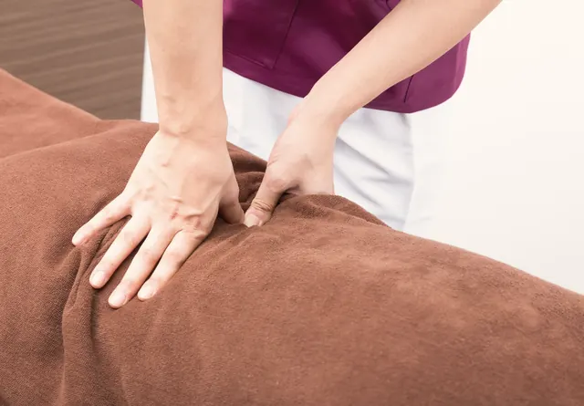

院長・柔道整復師
中村 圭Kei Nakamura
整形外科で10年、リハビリを担当してきました。痛みの理由がわかると、それだけで少し安心できます。わかる言葉でお話しします。
はじめての日は、施術の前に姿勢と動きを見て、どこが・なぜ固くなっているのかをお話しします。そのうえで「何回くらい、どのくらいの間隔で通えば楽になりそうか」の目安をお伝えします。
回数券はありません。楽になってきたら間隔をあけ、通う必要がなくなったらそうお伝えします。
お仕事帰りの方、お子さんを連れた方、ご年配の方まで。いちばん多いのは肩こりと腰痛です。

どちらが担当するかは、ご予約のときに選べます。女性の担当を希望される方も多いです。
院長・柔道整復師
整形外科で10年、リハビリを担当してきました。痛みの理由がわかると、それだけで少し安心できます。わかる言葉でお話しします。
スタッフ・あん摩マッサージ指圧師
2人の子どもを育てながら働いています。産後の骨盤や抱っこの腰のつらさは、わたしもよく知っています。気軽にご相談ください。
写真はイメージです。
すべて税込です。はじめての方は、検査と説明の時間をとっているので60分です。
| 時間 | 月 | 火 | 水 | 木 | 金 | 土 | 日・祝 |
|---|---|---|---|---|---|---|---|
| 9:00–14:00 | ○ | ○ | ○ | ○ | ○ | ○ | － |
| 14:00–17:00 | ○ | ○ | ○ | ○ | ○ | ○ | － |
| 17:00–20:00 | ○ | ○ | ○ | ○ | ○ | － | － |
最後の受付は、平日 19:00・土曜 16:00 です。予約の方が優先です。